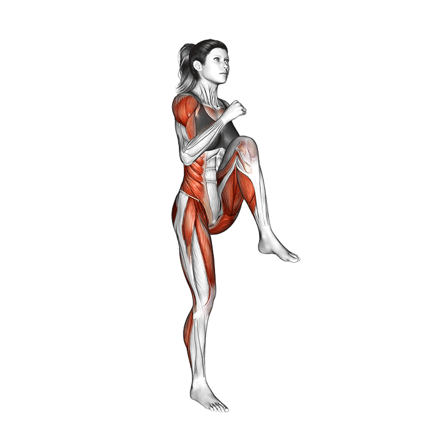

DESCRIPTION:
“Lower body strength is the ability of the body to exert a maximum force
against an object external to the body in one maximum effort of the lower body muscles...
The role of these muscles is to extend the leg from a bent position.”
Squats
CATEGORY:
Legs
DESCRIPTION:
Make sure you have put the barbell at a height where you can comfortably take it out and
put it back in.Take it out and make yourself ready:
•The bar is somewhat lower than your shoulders.
•The feet are quite apart and point out.
• The head is in your neck and looks up.
• The chest is out Go now slowly down, till your thighs are parallel with the floor,
not lower. The knees point outwards, your butt, out.Make a small pause of 1 second and
with as much energy as you can, push the weight up. Make a pause of 2 seconds
and repeat.
EQUIPMENT:
Barbell
PRIMARY MUSCLE:
Quadriceps femoris
DEFAULT REPS:
8
Standing Calf Raises
CATEGORY:
Calves
DESCRIPTION:
Get onto the calf raises machine, you should able to completely push your calves down.
Stand straight, don't make a hollow back and don't bend your legs.
Pull yourself up as high as you can. Make a small pause of 1 - 2 seconds and go
slowly down.
EQUIPMENT:
Barbell
PRIMARY MUSCLE:
Gastrocnemius
DEFAULT REPS:
10

High Knee Jumps
CATEGORY:
Legs
DESCRIPTION:
-Start with legs slightly wider than shoulder width
-Drop into a bodyweight squat
As you hit the bottom of the squat, explode upwards into a jump while simultaneously
tucking your knees into your chest midflight. Remain tucked until the apex of your jump.
-Land on both feet, making sure your knees are not locked so as to avoid excessive strain
upon your joints.Collect yourself into the next rep as quickly but under control
as possible.
EQUIPMENT:
Barbell
PRIMARY MUSCLE:
Biceps femoris
DEFAULT REPS:
10

Good Mornings
CATEGORY:
Legs
DESCRIPTION:
The Good Morning is a hip hinge exercise, meaning the movement comes from hinging your
hips, or bending at your waist. This puts it into the same category as a Deadlift and Squat
If you look closely, it's almost identical to a Romanian Deadlift except for the position of the bar.
EQUIPMENT:
Barbell
PRIMARY MUSCLE:
Biceps femoris
DEFAULT REPS:
8